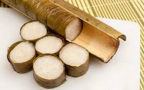

6 Menu Makanan Khas NTT 🌿

Se'i Sapi
Daging sapi asap khas Kupang dengan cita rasa gurih dan aroma khas.
Bahan-bahan:
- 500 gr daging sapi has dalam, iris tipis
- 5 siung bawang putih, haluskan
- 2 sdm garam
- 2 sdm gula merah serut
- 2 sdm ketumbar bubuk
- Kayu asap untuk pengasapan
Cara membuat:
- Campur daging dengan bawang putih, garam, gula merah, dan ketumbar. Diamkan 2 jam agar bumbu meresap.
- Susun daging di rak pengasap, asap hingga matang dan beraroma khas.
- Potong-potong dan sajikan dengan nasi hangat serta sambal sesuai selera.

Jagung Bose
Makanan tradisional dari jagung dan kacang yang dimasak bersama dengan bumbu sederhana.
Bahan-bahan:
- 200 gr jagung kering, rendam semalaman
- 150 gr kacang merah, rendam semalaman
- 2 lembar daun salam
- 3 siung bawang merah, iris
- 3 siung bawang putih, iris
- Garam dan lada secukupnya
Cara membuat:
- Rebus jagung dan kacang hingga empuk.
- Tumis bawang merah, bawang putih, dan daun salam hingga harum.
- Masukkan tumisan ke dalam rebusan jagung dan kacang, tambahkan garam dan lada.
- Masak dengan api kecil hingga bumbu meresap dan kuah sedikit menyusut.
- Sajikan hangat sebagai pengganti nasi atau lauk pendamping.

Ikan Kuah Kuning
Ikan segar dimasak dengan bumbu kunyit khas NTT yang segar dan gurih.
Bahan-bahan:
- 500 gr ikan segar (ikan kakap, ikan kerapu, atau ikan laut lainnya)
- 2 batang serai, memarkan
- 3 cm kunyit, haluskan
- 3 siung bawang merah, iris
- 3 siung bawang putih, iris
- 2 buah tomat, potong-potong
- Garam dan gula secukupnya
- Air secukupnya
Cara membuat:
- Tumis bawang merah, bawang putih, serai, dan kunyit hingga harum.
- Masukkan air dan didihkan.
- Masukkan ikan dan tomat, beri garam serta gula.
- Masak hingga ikan matang dan bumbu meresap.
- Sajikan dengan nasi putih hangat.

Kolo
Nasi khas Flores yang dimasak dalam bambu di atas bara api, menghasilkan aroma asap yang khas.
Bahan-bahan:
- 500 gr beras pulen
- 1 liter air (untuk merendam)
- 1 sdt garam
- Daun pisang secukupnya
- Bambu muda (diameter 5–8 cm), potong sepanjang 30 cm
Cara membuat:
- Cuci beras hingga bersih, rendam dalam air garam selama 30 menit lalu tiriskan sedikit.
- Lapisi bagian dalam bambu dengan daun pisang untuk mencegah lengket dan memberi aroma khas.
- Masukkan beras ke dalam bambu, tambahkan air secukupnya (sekitar 1:1 rasio dengan beras).
- Panggang bambu berisi beras di atas bara api sambil diputar-putar agar matang merata, selama sekitar 30–40 menit.
- Setelah matang, keluarkan nasi dari bambu dan sajikan hangat dengan lauk khas NTT seperti Se’i atau sambal Lu’at.
Rumpu Rampe
Tumis daun dan bunga pepaya khas NTT dengan cita rasa pahit segar dan sedikit pedas.
Bahan-bahan:
- 1 ikat daun pepaya muda, siangi
- 1 genggam bunga pepaya
- 5 siung bawang merah, iris tipis
- 3 siung bawang putih, iris tipis
- 5 buah cabai merah keriting, iris serong
- 2 lembar daun salam
- Garam dan gula secukupnya
- Air dan minyak goreng secukupnya
Cara membuat:
- Rebus daun dan bunga pepaya dengan sedikit garam hingga layu dan empuk, tiriskan dan peras agar tidak terlalu pahit.
- Tumis bawang merah, bawang putih, dan cabai hingga harum.
- Masukkan daun salam, lalu tambahkan daun dan bunga pepaya.
- Aduk rata, beri garam dan gula secukupnya. Masak hingga semua bahan tercampur rata dan matang.
- Sajikan hangat sebagai lauk pendamping nasi dan ikan.
Sambal Lu'at
Sambal khas NTT berbahan dasar cabai dan tomat, pedas dan segar sebagai pelengkap lauk.
Bahan-bahan:
- 10 buah cabai merah keriting
- 5 buah cabai rawit
- 2 buah tomat merah, potong-potong
- 3 siung bawang putih
- Garam dan gula secukupnya
- Minyak goreng secukupnya
Cara membuat:
- Goreng cabai merah, cabai rawit, tomat, dan bawang putih hingga layu.
- Haluskan semua bahan gorengan bersama garam dan gula.
- Tambahkan minyak goreng sedikit demi sedikit hingga sambal agak berminyak.
- Sajikan sebagai pelengkap lauk dan nasi hangat.